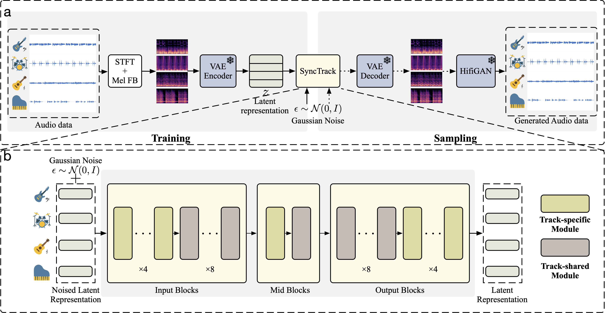

SyncTrack: Rhythmic Stability and Synchronization in Multi-Track Music Generation
Abstract
Multi-track music generation has garnered significant research interest due to its precise mixing and remixing capabilities. However, existing models often overlook essential attributes such as rhythmic stability and synchronization, leading to a focus on differences between tracks rather than their inherent properties. In this paper, we introduce SyncTrack, a synchronous multi-track waveform music generation model designed to capture the unique characteristics of multi-track music. SyncTrack features a novel architecture that includes a shared module to establish a common rhythm across all tracks and track-specific modules to accommodate diverse timbres and pitch ranges. The shared module employs two cross-track attention mechanisms to synchronize rhythmic information, while the track-specific modules utilize learnable instrument priors to better represent timbre and other unique features. Additionally, we enhance the evaluation of multi-track music quality by introducing rhythmic consistency through three novel metrics: Inner-track Rhythmic Stability (IRS), Cross-track Beat Synchronization (CBS), and Cross-track Beat Dispersion (CBD). Both objective metrics and subjective listening tests demonstrate that SyncTrack significantly improves multi-track music quality by enhancing rhythmic consistency.

Figure 1: Figure 2: a. Overall pipeline for SyncTrack. Training pipeline: We train a four-track latent diffusion model. Each track is perturbed based on l-th signal-to-noise ratio. The model is optimized to predict the added noise ϵ. Inference pipeline: At test time, four-track latents are generated and then decoded into audio data. b. SyncTrack consists of input, mid, and output blocks, which contains track-specific modules and track-shared modules.
Comparison
The below audio samples show the comparison between ground truth, MSG-LD and SyncTrack